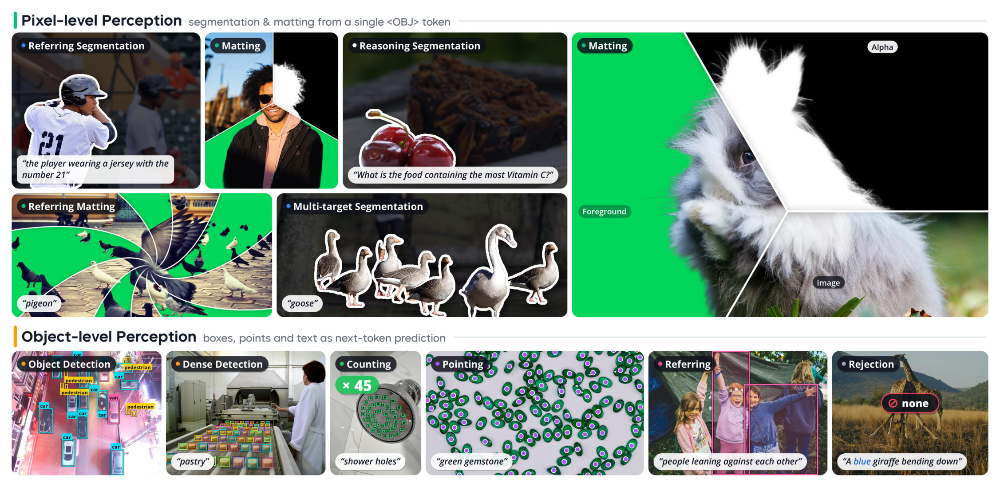
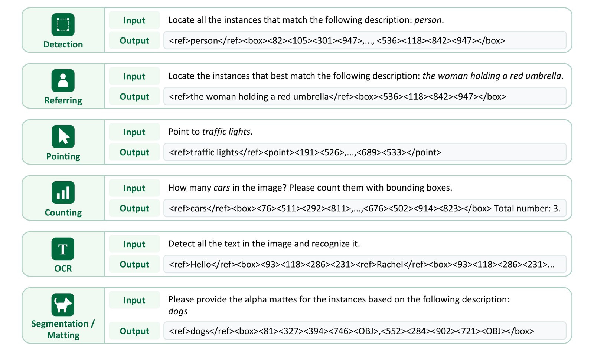

WeVisOne-VL：把“在哪里”与“哪些像素”接在同一个实例上

一、先拆清它统一了什么
主干来自 Qwen3-VL，提供 2B 和 4B 两个规模。对象级任务输出离散结构，像素级任务还要调用 mask_decoder.pt，后者 9,609,764 参数，约9.6M；这不是整个模型只有9.6M，也不是可省略的装饰性附件。
| 输入意图 | 实际输出 | 最容易误读的边界 |
|---|---|---|
| 类别检测、指代表达 | 目标框，或 None | 查询不存在时应拒绝，而非硬画一个框 |
| 计数、指点 | 框/点集合及数量 | 点匹配 F1 与计数 exact-match 不是同一指标 |
| OCR | 文本及其框 | 同时要求转写与位置，不能当纯识别准确率 |
| 分割 | 框、<OBJ>、二值掩码 | 当前单轮图像任务，不是视频跟踪 |
| 抠图 | 框、<OBJ>、连续 alpha | 半透明与发丝不能用二值边界完全表示 |
卡片声明面向感知研究，不面向自主高影响决策或身份识别。直接输出结构化结果，不显式生成 CoT；专项微调也可能损失基座的通用能力。
10 月 27 日模型卡校正记录
2B 原卡将旧的 9,511,460（约9.5M） 改为 9,609,764（约9.6M），与4B卡和本文原有报告口径一致；两张卡还补上论文、项目页和引用。报告已在10月23日归档，这次只是同步模型卡的证据链。参数描述被修正不能单独证明权重发生更新，本文未以README修改时间新增发布事件，family和首发日期待核状态保持不变。
二、Data Engine：高召回提案不等于可靠监督

报告写约 100M 图像、3.6B 框标注，来自 GRIT、CC3M、LAION、SA-1B 及专项数据。它们是图像/标注口径，不应与各阶段重复采样的训练样本数直接相加。
- 概念与指代约束共同组织。 知识图谱合并类别别名，但不能丢掉“红色、左边、正在拿东西”等决定目标集合的限制；按长尾、遮挡、尺度和既有失败补采样。
- 定位专家先保召回，VLM 再保语义。 SAM3 与内部 DINO 风格检测器给提案，Qwen3-VL 检查类别；指代管线另引 Rex-Omni。不能把某个检测器没检出直接标成负例。
- 负例要看整幅图。 把“红车”改成“蓝车”，不保证图里没有蓝车；只有完整检查后无对象满足全部条件，才保留空目标集合。模型仍画框的已审负例成为 hard negative。
- 框、掩码与 alpha 保持同一实例。 SAM2 产生二值掩码；抠图标注结合 BiRefNet、MatAnyone2，并训练专门 Mask2Alpha 标注器。选源和二值回退都有 provenance，不能把所有伪标签当精确人工 alpha。
- 模型错误只触发复查，不自动改真值。 可靠标注保留并重采样；坏标注重做；未解决的案例排除。原图、近重复与派生任务记录保持同一分区，固定监控集不进训练或阈值校准。
Mask2Alpha 是数据引擎的独立标注组件；“推理不依赖 SAM”不意味着数据构建从未使用 SAM。
三、token 到像素：一个对象，一条身份链

坐标使用 <0> 至 <1000> 的专用归一化 token。框为四个坐标，点为两个；像素任务在框后追加 <OBJ>（原卡给 token ID 152678）。None 是空目标的有效答案，不是解析错误。

解码器先取 Qwen3-VL ViT pre-merging 的多层特征，投影并加入空间/层级位置；以 <OBJ> 隐状态初始化内容查询，以框的 Fourier 编码形成位置查询，经过 6 个 deformable block。随后用实例查询生成动态卷积核，作用于共享像素特征，最后多尺度细化边缘和部分透明度。
论文的动态掩码头可概括为：
$$[k_i,\beta_i]=\mathrm{MLP}(\tilde q_i),\qquad M_i=k_i^\top P+\beta_i.$$
这解释了它为何不用再挂一个大型分割网络：图像特征共享、目标表示来自语言模型输出。但定位错目标时，精细像素解码也不能修复语义选错。
四、训练顺序：最重要的是 warm-up 后回接原 S2
| 阶段 | 数据/步数 | 可训练部分与目标 |
|---|---|---|
| SFT-S1 | 表9为90.2M；13,000步 | 冻结视觉/投影，只训LLM；新token/结构对齐；每类≤50框/点，16–512视觉token，4096上下文 |
| SFT-S2 | 表9为40.5M；表11为8,995步 | 全VLM；高分辨率/密集目标；最多1960视觉token、500框/点、8192上下文 |
| 像素 warm-up | 正文250M分割样本；100K步 | VLM与随机解码器联合训练，但之后仅保留解码器和<OBJ> embedding |
| SFT-S3 | 表9为41.8M；表11为9,062步 | 回接原S2，NTP/分割1:1；LLM用LoRA r128/alpha256/dropout0.05，embedding/head全训 |
| 抠图微调 | 正文130M；100K步 | 冻结VLM，只训decoder；1024²，公共/WDE每batch约1:4 |
| Mixed-task RL | 178K样本；593步 | 只训LLM；GRPO每题8个回答；FSDP2+vLLM |
正文把 S2/S3 步数约写成9K，表11给精确值，二者并列保留。附录分割数据源库存171.4M公共+288.4M WDE，与 warm-up 使用250M不是同一个统计量；130M抠图也不等于130M独立新图。
分割损失为 \(20L_{focal}+L_{dice}\)，联合阶段为 \(L_{NTP}+10L_{seg}\)；抠图是 \(200L_1+5L_{grad}+50L_{lap}+L_{hard}\)。SFT用128GPU、RL用160GPU是论文训练配置，不是推理最低硬件要求。
RL 不是直接优化所有像素
先用 SFT 模型采样，按 \(U(x)=4\mu_x(1-\mu_x)\sigma_x\) 选中等难度且结果有差异的约140K案例，再补充定位/指点样本到178K。不能把“高不确定度”误写成奖励全零的最难题。
同类内对预测与真值做 Hungarian 一对一匹配，奖励：
$$r_i=\frac{2\sum_{(\hat b,b^{\star})\in\mathcal M_i}\mathrm{IoU}(\hat b,b^{\star})^3}{N_{gt}+N_{pred}}.$$
重复框增大分母、漏框也受罚；IoU立方强化高精度定位。分割/抠图在 RL 仍只用框奖励，不对 mask/alpha 给奖励；缺失目标只在不预测对象时得1，指点用点–真值mask匹配F1，OCR用转写奖励。这是代理奖励边界，不能宣称直接像素RL。
五、结果：报告原值，先对齐指标
下表来自官方报告/仓库，非本地复测。报告贪心解码、temperature0、每图≤1960视觉token；Qwen3.5基线启用 thinking，与无CoT结构化模型的成本不等价。
| Benchmark / 指标 | 2B | 4B | 解读 |
|---|---|---|---|
| COCO / F1 Mean↑ | 55.2 | 57.1 | 不是COCO AP |
| LVIS / F1 Mean↑ | 53.3 | 55.3 | 长尾检测 |
| Dense200 / F1 Mean↑ | 61.4 | 71.3 | 密集检测 |
| VisDrone / F1 Mean↑ | 40.4 | 44.7 | 小目标 |
| RefCOCOg test / F1 Mean↑ | 78.2 | 81.8 | 正目标定位 |
| WeRef / Rejection Rate↑ | 92.9 | 96.4 | 自建集；不是所有场景拒答准确率 |
| PixMo-Count test / exact-match↑ | 88.1 | 89.6 | 少/多一个也算错 |
| PointBench / F1@Point↑ | 62.9 | 71.9 | README简表写Acc；本文按报告口径 |
| TotalText / F1 Mean↑ | 42.5 | 52.0 | 转写与框同时匹配 |
| ReasonSeg val / gIoU↑ | 60.9 | 71.2 | 不与cIoU混排 |
| P3M-500-NP Box / MAD×1000↓ | 6.6 | 7.3 | 2B更好，不是4B全面领先 |
| WeRefMat Referring / MAD×1000↓ | 15.8 | 9.8 | 私有文本抠图集，复现边界 |
F1 Mean 是 IoU0.5至0.95步长0.05的平均，不是单一IoU0.5；Ref-ZOM还区分零/一/多目标。Box-matting使用真值框，而文本抠图先定位再解码，不能把两个任务数字当同一难度。
六、对 Agent Training 的启发
可以转化为实验的点：先用可验证结构监督统一接口，再补高分辨率与密集目标；对缺失目标保留真正空集合；不确定度筛选时保留成功/失败都有的轨迹；像素效果用独立 verifier，不把训练框奖励直接当 alpha质量验收。
来源与关联
- 🤗 4B Model Card；2B Model Card。原文：
src/hf_model_card.md、src/hf_2b_model_card.md。 - 📄 Tech Report HTML；PDF链接仅外链，未下载PDF。
- 🧩 官方源码与评测；项目页。归档代码未执行。
- 关联：WeVisDoc 关注文档感知；Qwen3-VL Atlas节点及官方仓库可追溯骨干来源；Hy-Nomas 是同团队树下另一种世界生成专项，不混成聊天正代。
📊 中文海报：wevisone_vl_poster_zh.html · Thinking Overview